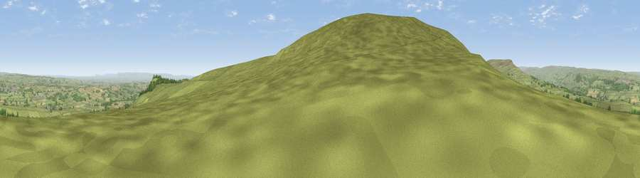

Viewpoint near Coverham
#6476 in England · top 5% of its area beats it · near CoverhamThe view, rendered

A 360° render of this exact spot computed from the terrain model, tree cover and land cover — summer colours, afternoon light, calibrated against photographs of famous viewpoints. Real trees, hedges and buildings will differ in detail.
The panorama
Grey silhouette: terrain skyline in each direction (720 bearings, Earth curvature and refraction included). Dashed green: skyline with trees (+15 m) and buildings (+8 m) as obstacles. Blue strip: how far the ground is visible on each bearing.
Where the view opens
Wedge length = distance to the farthest visible ground on that bearing (vegetation-aware). Rings at 10, 25 and 50 km.
What fills the view
86% grassland · 8% woodland · 5% cropland ·
Angular shares of the visible panorama (visual magnitude), not map area. Landscape diversity 0.24 (0–1 Shannon).
Key numbers
More beautiful places nearby
The staircase of upgrades: each row has a higher view potential than everything closer. Driving times are estimates from straight-line distance, calibrated against real road routing — check an actual route before setting out.
| Place | Direction | Drive | Score |
|---|---|---|---|
| Viewpoint near Coverham | WSW · 0 km | ~2 min | 73.7 |
| Viewpoint near East Witton | E · 2 km | ~6 min | 74.4 |
| Viewpoint near East Witton | E · 3 km | ~7 min | 77.8 |
| Viewpoint near Kirby Knowle | E · 34 km | ~53 min | 80.5 |
| Beacon Hill | ENE · 38 km | ~57 min | 84.7 |
| Carlton Bank | ENE · 44 km | ~64 min | 85.1 |
| Roseberry Topping | ENE · 54 km | ~76 min | 85.8 |
| Viewpoint near Lazenby | NE · 56 km | ~78 min | 86.4 |
54.26078, -1.83225 · source: screening · position refined by local search. Computed location — check access rights before visiting.